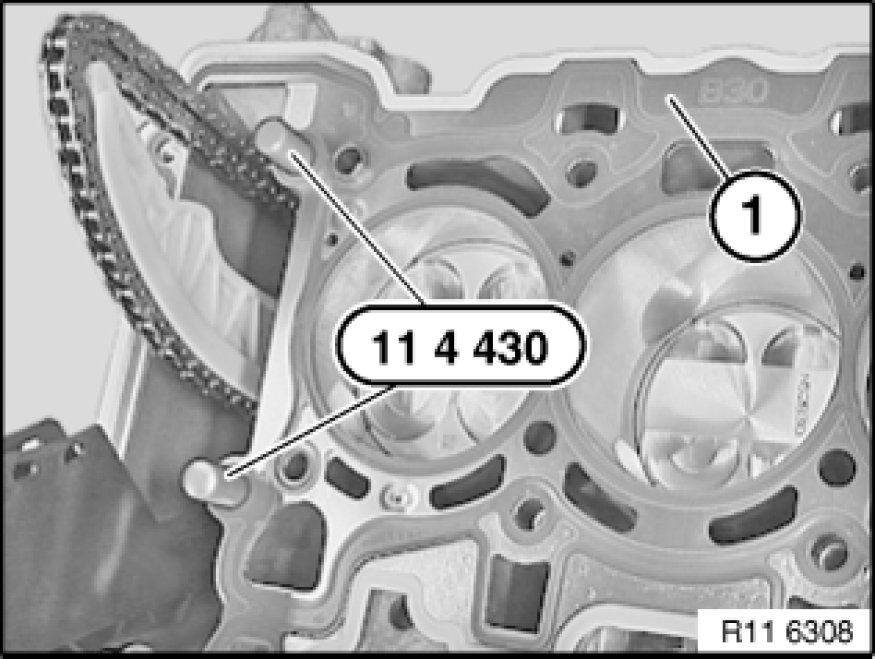

Cylinder Head Gasket: Service and Repair
11 12 101 - Replacing cylinder head gasket (N52K)

Special tools required:
- 11 4 430 11 4 430 Seal Plugs (2 X)
- 11 4 470 11 4 470 Cleaning Kit

Important!
Aluminium-magnesium materials.
No steel screws/bolts may be used due to the threat of electrochemical corrosion.
A magnesium crankcase requires aluminium screws/bolts exclusively.
Aluminium screws/bolts must be replaced each time they are released.
Aluminium screws/bolts are permitted with and without
color coding (blue).
For reliable identification:
Aluminium screws/bolts are not magnetic.
Jointing torque and angle of rotation must be observed without fail (risk of damage).

Necessary preliminary tasks:
- Remove cylinder head Removal and Replacement.

Insert special tool 11 4 430 11 4 430 Seal Plugs (2 X) into bores.
Remove cylinder head seal.
Important!
Check marking (1) on cylinder head gasket (B25 or B30).
- B = petrol/gasoline engine
- 30 = displacement (3 liters)
Do not mix them up as this will cause engine damage.
Remove remnants of oil and dirt from pocket holes (1).
Important!
Work on sealing face on engine block and on cylinder head with special tool 11 4 470 11 4 470 Cleaning Kit only.
Do not use any metal-cutting tools.
Important!
Rubber coating (2) on cylinder head gasket (3) must not under any circumstances be damaged (electrochemical corrosion).
Cylinder head gasket (3) is a sheet-metal gasket.
Check adapter sleeves (1) for damage and firm seating.
Place cylinder head gasket (2) in direction of arrow on engine block.

Note:
Check cylinder head for deviation from flatness [1][2]Procedures.
Check cylinder head for water leaks Testing and Inspection.
Assemble engine.